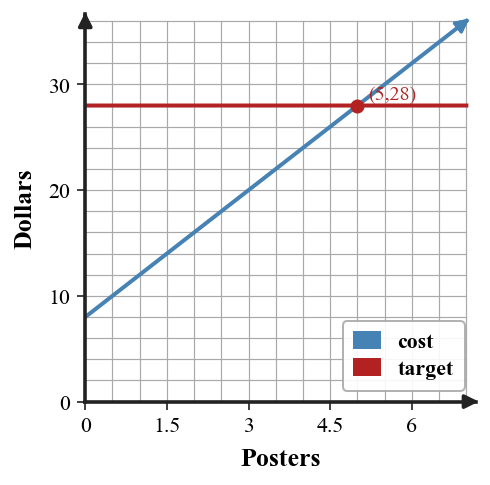

Mathematical idea: Solving an equation finds the value that makes two quantities equal, and the solution must make sense in context.
Today you will check solutions, write equations from situations, solve multi-step equations, and compare solution methods. You will also interpret the answer in the original context.
Learning Target: Students will write, solve, and interpret equations that model situations.
I can statements
This is a long-range preview for future lessons. Do not solve it today. Instead, annotate it individually. Circle anything familiar, underline symbols or directions that seem important, and write notes about what information you think will be needed later.
As you annotate, ask yourself: What parts (words, symbols, graphs) do you KNOW? What parts look FAMILIAR? What parts look like jibberish?
Design a one-variable equation model for a realistic school or club situation where the solution is $8$. Include the context, define the variable, write the equation, solve it, and interpret why $8$ makes sense.
Teacher note: Do not solve the future task. Listen for students naming familiar representations, symbols, and unknown parts.
Directions
Read the introduction aloud with a partner or in a small group. As you read, annotate the text by highlighting important ideas, circling key vocabulary, and writing short notes about connections, questions, or predictions in the margins.
An equation states that two expressions are equal. A number is a solution when substituting it for the variable makes both sides have the same value. Checking a solution means replacing the variable and simplifying both sides.
Many equations model real situations such as cost, distance, or totals. After solving, the number should answer the original question and use the correct unit. A value can be algebraically correct but unreasonable if it does not fit the context.
There is often more than one valid way to solve an equation. One student might divide first, while another distributes first. If each step keeps the equation balanced, both methods can lead to the same solution.
Key representations in this section include context-based equations, solution steps, variables as quantities, balanced relationships, and interpreted solutions. Each representation helps connect the algebra to the situation.
Before solving, predict a reasonable value from the context. After solving, substitute the answer back into the equation and explain what the variable represents.
Teacher note: Use this space for student annotations. Prompt partners to underline vocabulary and circle quantities.
Stop and Discuss
Answers: 1. A number is a solution if substituting it makes both sides equal. 2. The solution should answer the original question with units and should be reasonable. 3. Different methods can be valid if every step keeps the equation balanced.
To check whether a value is a solution, substitute it for the variable and see whether both sides are equal.
For $3x+2=14$ and $x=4$: $$3(4)+2=12+2=14.$$
| Side | Value when $x=4$ |
|---|---|
| Left side $3x+2$ | 14 |
| Right side | 14 |
Context: If $x$ counts items, the solution tells which number of items makes the two totals balance.
Decide whether $x=5$ is a solution to $2x+7=17$.
Example 1 answer: $2(5)+7=17$, which equals the right side. Yes, $x=5$ is a solution.
Decide whether $x=3$ is a solution to $4x+1=13$.
You Try It 1 answer: $4(3)+1=13$, so yes, both sides are equal.
Stop and Discuss
Discussion guide: Listen for students connecting the Example and YTI with evidence. Follow-up: ask which representation or step made the answer most certain.
To model a situation, define the variable, translate the fixed and repeated amounts, then solve the equation that matches the target total.
A club pays 8 dollars to start and 4 dollars per poster. To spend 28 dollars, solve $$8+4p=28.$$
| Posters $p$ | 0 | 3 | 5 | 6 |
|---|---|---|---|---|
| Cost | 8 | 20 | 28 | 32 |

Context: The solution $p=5$ means 5 posters make the cost exactly 28 dollars.
A game booth charges 5 dollars to enter and 4 dollars per play. Mia spends 29 dollars total. Let $p$ be the number of plays.
Example 2 answer: Equation $5+4p=29$. Solve $4p=24$, so $p=6$. Mia played 6 games.
A club orders shirts. There is a 7 dollar setup cost and 6 dollars per shirt. The total is 43 dollars. Let $s$ be shirts.
You Try It 2 answer: $7+6s=43$; $6s=36$; $s=6$. The club ordered 6 shirts.
Stop and Discuss
Discussion guide: Listen for students connecting the Example and YTI with evidence. Follow-up: ask which representation or step made the answer most certain.
Each solution step should keep the two sides balanced. Undo operations in an order that makes the equation simpler.
For $4(x-2)+6=30$:
$$4(x-2)+6=30$$ $$4(x-2)=24$$ $$x-2=6$$ $$x=8$$| Check | Computation | Result |
|---|---|---|
| Left side | $4(8-2)+6$ | 30 |
| Right side | $30$ | 30 |
Solve the equation and show each step.
Example 3 answer: $3(x-4)+9=24 \Rightarrow 3(x-4)=15 \Rightarrow x-4=5 \Rightarrow x=9$. Check: $3(9-4)+9=24$. Subtracting 9 from both sides or dividing both sides by 3 keeps balance.
Solve $5(x-3)+4=39$ and show your steps.
You Try It 3 answer: $5(x-3)+4=39 \Rightarrow 5(x-3)=35 \Rightarrow x-3=7 \Rightarrow x=10$. Check: $5(10-3)+4=39$. Inverse operations include subtracting 4 and dividing by 5.
Stop and Discuss
Discussion guide: Listen for students connecting the Example and YTI with evidence. Follow-up: ask which representation or step made the answer most certain.
Two students solve $2(x+6)=28$. Student A divides by 2 first. Student B distributes first.
Example 4 answer: A: $x+6=14$, so $x=8$. B: $2x+12=28$, $2x=16$, $x=8$. Dividing first is more efficient because it avoids distribution.
Two students solve $4(x+2)=36$. One divides by 4 first; the other distributes first.
You Try It 4 answer: Divide first: $x+2=9$, so $x=7$. Distribute: $4x+8=36$, $4x=28$, $x=7$. Dividing first is typically quicker here.
Stop and Discuss
Discussion guide: Listen for students connecting the Example and YTI with evidence. Follow-up: ask which representation or step made the answer most certain.
Equations model situations by showing two quantities that are equal. Solving finds the value of the variable that makes the equality true.
A good equation defines the variable, represents fixed and repeated amounts, and uses balanced steps to solve. Checking substitutes the solution back into the equation.
A common error is solving correctly but forgetting to interpret the answer in the context.
Strong understanding means you can write the equation, solve it, check it, and explain why the solution is reasonable for the original situation.
Look back at the future task. Do not solve it yet. Highlight one part that makes more sense now than it did at the beginning. Circle one part that still feels unfamiliar. Write one sentence about what representation you would look at first.
Is $x=4$ a solution to $3x+2=14$?
A movie rental service charges \$6 plus \$3 per movie. Write and solve an equation to find how many movies can be rented for \$27.
What is one idea about equations as models you understand better now than at the start of class? Write at least one complete sentence.
What is one thing about equations as models you still want to understand or practice? Be specific — name the idea, not just "everything."